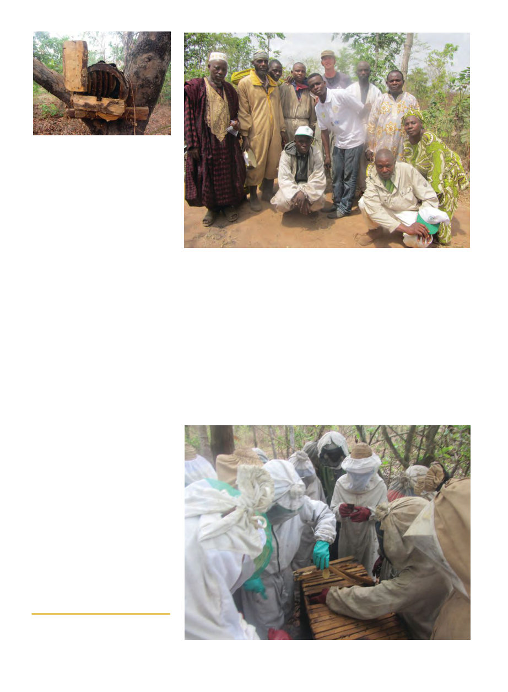

American Bee Journal
882
gion but the highest topbar hive cost I’ve
seen is around $16), low management re-
quirements (African bees are tolerant of
most things naturally occurring in their area
so you’re not constantly fighting diseases,
and there are no varroa mites!), and a poten-
tial tenfold profit (in Nigeria you can buy a
topbar hive for $16 and sell the resultant 10-
12 liters of honey for about $150).
My first two projects were in Nigeria and
the third was in Ethiopia. In Nigeria the bees
(Apis mellifera adansonii) are traditionally
kept in hollowed out logs, with lids on either
side made of planks or corrugated metal or
whatever else was at hand. The logs are kept
high up in trees. To harvest the honey they
climb the tree at night and using the smoking
bundle of reeds – but typically no other pro-
tective gear – they remove everything from
the beehive.
In Ibadan in the southwest of Nigeria I
was told they could buy a Kenyan Topbar
Hive (KTBH) for about 2500 niara ($15.82),
get 10-12 liters out of it, and sell the honey
for 2600N/liter (for a total of $164-$197). A
Langstroth hive there produces about 25
liters, but costs 35,000N, ie $222!
Every hive I opened in Nigeria had a lot
of small hive beetles in it. Because the
Nigerian bee co-evolved with the small hive
beetle, they tolerate each-other and it’s not
a problem. Between the cheap cost of topbar
hives and the lack of a necessity to spend
money on medications, it almost sounds to
me like I should move to Nigeria, start bee-
keeping there, and soon be so rich I’ll have
nothing better to do than email Americans
offering to wire-transfer them money… and
then wonder why they don’t take me up on
it. There are, of course, some serious chal-
lenges to beekeeping in Nigeria though.
There’s a lack of any kind of processing
equipment. If you want an extractor or fil-
tration tanks, you’re going to need to order
them from somewhere thousands of miles
away. Langstroth hives, as I said, are dispro-
portionately expensive (presumably because
no one is mass-producing them there).
There’s no bulk honey buyer or cooperative
system, so every beekeeper either sells his
honey personally in the market or to small-
scale honey marketers (who then sell it per-
sonally in the market). The biggest problem,
however, is that everyone is afraid of bees.
If the fruit grower three plots of land away
from you sees you have beehives on your
land, he is going to complain, have the local
government order you to move them, or
sneak over at night and destroy your hives.
This causes beekeepers to put their hives so
far away from anywhere that it’s burden-
some for them to go out there, and theft is a
problem. Remotely located bee yards are
often raided and destroyed by opportunists.
This contrasts sharply with Ethiopia where
beehives are commonly kept in the living-
room! (Okay that’s not entirely true – they
prefer to put them in the kitchen.) Theft was
the most common thing beekeepers I met in
Nigeria cited as the most serious problem
they are facing.
Another problem with African bees is that
they have a high tendency to abscond. This
is a beneficial adaption for the bees, since
many diseases are brood based and the bees
leave the brood behind when they find them-
selves facing a disease. Additionally, they
survive droughts or dearth periods by mov-
ing to a better area for the time. Hive inspec-
tions can also cause absconding, but people
I talked to1 report that when done right, with
the right amount of smoke, you can still in-
spect hives as often as once a week without
causing absconding.
Another observation I made about the A.
m. adansonii bees was that they were very
crawly – tending to practically abandon a
comb as soon as I picked it up and almost all
1 Idris Zaria, a beekeeper and cooperative or-
ganizer in Kaduna State, Nigeria, as re-
ported to me by beekeeping volunteer Doug
Johnson, who met with him.
A traditional hive near Farin Ruwa,
Nigeria.
Nigerian beekeeper group shot.
Working on a Kenya Topbar Hive